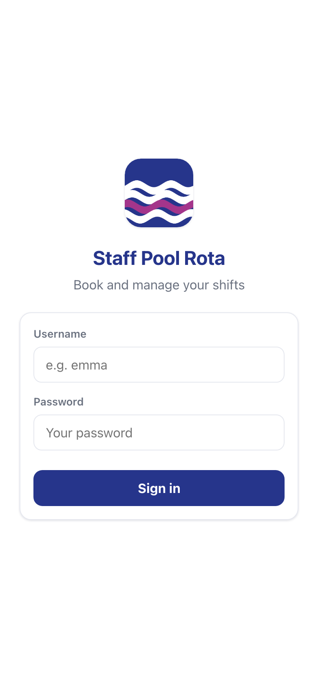

This is the story of a small, deliberately boring piece of software that does one job extremely well: it lets swim teachers and lifeguards put themselves on the poolside rota from their phones, and lets the manager approve, fill, report on and reshape that rota without a single spreadsheet. Here's the whole thing — the problem, the design, every feature, the genuinely hard parts (there were three), the five security audits, and the day-by-day build history.
1 · The problem · 2 · The system at a glance · 3 · The deliberately boring stack · 4 · The staff experience · 5 · The admin cockpit · 6 · Messaging · 7 · The three hard problems · 8 · Five audits in a week · 9 · The build, day by day · 10 · Running it for real · 11 · What's next
1The problem: who's on poolside at 6:30?
A busy public swimming pool runs on half-hour blocks. Every block needs a lifeguard on poolside, full stop — that's a legal-grade requirement, not a nice-to-have. Layered on top, the swim school runs classes all evening: Parents & Toddlers needs a teacher and an assistant, Levels 1–10 each need a teacher, and different evenings run different combinations. Staff are part-time, many hold more than one qualification, and lifeguard training certificates expire.
Before this app, that reality was managed the way it is at thousands of pools: a printed grid in the staff room, a group chat full of "can anyone take Tuesday 6pm?", and one coordinator holding the whole thing in their head. The failure modes write themselves — double-booked staff, empty lifeguard slots discovered on the day, an expired certificate nobody noticed, and zero records of who agreed to what.
2The system at a glance
Everything revolves around one idea: the weekly class timetable is data, and the rota is generated from it. An admin describes the schedule once — "Level 5 runs Monday and Wednesday at 17:00, one teacher" — and the system materialises every individual, bookable person-shift 26 weeks into the future, rolling the horizon forward daily. A lifeguard shift is generated for every half-hour the pool is open, automatically.
The numbers, as of today:
3The deliberately boring stack
The entire backend is FastAPI + SQLite — about 2,600 lines of Python across five files, with passwords hashed and tokens signed using only the standard library (PBKDF2 at 120k iterations; compact HMAC bearer tokens). The frontend is a single vanilla-JavaScript file (~3,100 lines), one stylesheet, and a 48-line service worker. There is no React, no bundler, no node_modules, no build step of any kind. The full dependency list is:
And it's a real PWA: installable to the home screen with its own icon, app-shell cached for instant loads and offline resilience, while API calls always hit the network so rota data is never stale. Staff "install the app" the way they expect to — no app store, no review queue, and shipping an update is bumping one cache-version string.
4The staff experience — three taps to a shift
Staff log in and land on a personal dashboard: a compact 7-day grid of their week
(green = approved, amber = pending, 🛟 = lifeguard duty, L5-style codes for classes),
a count of what's open to grab, and — if their lifeguard training is close to expiry — a banner
they can't miss.


The Shifts tab is the heart of it. The week timetable shows every half-hour block with a
coverage pill (2/2 covered, part-cover in amber, open in white), filterable by role
and by class. Your own shifts get a solid outline; your pending requests a dashed red one. Tap any
open slot and you've requested it — the server checks you're qualified for the role and not
already booked at that time before it says yes. A day view presents the same data as a
tappable card list.


The profile tab closes the loop on compliance: staff record their own lifeguard-training expiry date, see their qualified roles, and change their password (with a forced-change flow if an admin account is still on a default password). Release a shift you can no longer make and the admins are notified instantly; if an admin removes one of yours, you get a direct message with the reason.

5The admin cockpit
Admins get everything staff get, plus four tabs: Approvals · Reports · Manage · Rota. Their home page leads with the thing that needs attention — the approvals backlog.


Three details in the approvals queue earn their keep. First, clash detection: if someone requested a slot that now conflicts with a shift they've since been approved for, the row shows the clash inline and the approve button is disabled — the bad state is unrepresentable. Second, declines carry an optional reason, which is delivered to the person as a direct message. Third, the queue shows who else has requested a contested slot, so the admin is choosing, not guessing.
The rota builder
For the manager who'd rather place people than wait for requests, the Rota tab is a spreadsheet-killer: pick a person, tick any number of cells across the week — across roles, with an "All roles" view that badges each cell by role colour — and bulk-assign in one shot. Anything that can't be assigned comes back as a detailed skip report (already taken, not qualified, clashes with their other shift — with times), rather than a silent partial success. Tap an assigned cell to remove the person (they're DM'd the reason). A Delete Shifts mode soft-deletes open slots with a "Recently deleted" restore view, a Wide mode shows full names for big screens, and Print produces the PDF for the staff-room door.

The schedule editor — where the rota comes from
Manage → Classes is the single source of truth the whole system generates from. Each class lists its weekly sessions with − / ＋ steppers for how many run at each time. Change the schedule and the system reconciles reality for you: it counts the already-generated future shifts that no longer match, tells you how many are booked by real people, and offers the humane option — "Keep shifts staff are already booked on" — which detaches those bookings as standalone one-offs while clearing the rest, notifying everyone affected, automatically.

Reports that answer the actual questions
Outstanding lists every unfilled shift for the next month, with CSV export. Coverage turns each day into a single bar and percentage — the manager's five-second health check. Training is the compliance view: every lifeguard, their expiry date, sorted so expired and expiring float to the top. And the Activity log records every action in the system — who approved what, who deleted what, when — filterable by category.


6Messaging — because the group chat was the real rota
Rather than pretend staff won't coordinate by chat, the app brings the chat inside: an All Staff system channel everyone belongs to, role-linked channels (add someone to the Lifeguard role and they're in the Lifeguards channel automatically), and a private "Message Admins" line for every staff member. Delivery is real-time over server-sent events, with unread badges on the tab bar; declined requests, removed shifts and schedule cancellations all arrive here with their reasons, so the audit trail and the conversation are the same thing. Deleted channels are archived with their full history, not erased.


7The three genuinely hard problems
1 · Two thumbs, one shift
The app's core promise is who holds which shift — and the moment it's most useful
(the rota opens, everyone grabs at once) is exactly when naive code corrupts it. The original
booking path did what almost every CRUD app does: SELECT the slot, check it's open,
then UPDATE it. Two people tapping the same slot in the same instant both pass the
check, both write, and both get told "it's yours" — but only the last write wins. The
loser finds out at the poolside.
BEGIN IMMEDIATE (take the write lock before reading), and every
state change is a conditional update — UPDATE … WHERE id=? AND
status='open' — whose row-count is checked. Lose the race and you get an honest
"That shift was just taken by someone else", never a false success. The same pattern
guards request, approve, assign, bulk-assign, delete, restore, release and reject.
Crucially, this isn't trusted on faith: the test suite spins up a real server and fires genuinely parallel requests released by a thread barrier — six users hitting one slot must produce exactly one success, and one user double-tapping two overlapping slots must end up holding exactly one.
2 · Schedules change; the future already exists
Because shifts are materialised 26 weeks ahead, every schedule edit is a tiny migration
problem: cancel Wednesday's Level 3 class and there are six months of already-generated — possibly
already booked — Level 3 shifts stranded on the calendar. The solution that survived
contact with reality: every generated shift carries a source_schedule_id tag linking
it to the schedule line that created it. Edits compute the precise orphan set (count-aware, so
reducing "two teachers" to "one" removes only the surplus, preferring unbooked shifts), ad-hoc
one-off shifts are never touched, affected staff are notified and DM'd, and booked shifts can be
kept as detached one-offs. Removed shifts are hard-deleted so re-adding the class later
regenerates cleanly.
3 · The cache that ate Tuesday
PWAs cache aggressively — that's the point — but it means a careless deploy strands users on
last week's JavaScript. The discipline that emerged after one too many "but it works on my
machine": static files are unversioned, and a single cache-name constant in the service
worker is the only source of truth. Bump staff-pool-v61 → v62 and the
activate handler clears the old shell everywhere. Sixty-two bumps so far — the number is an
honest, monotonic count of every front-end release.
8Five audits in a week
The app was audited end-to-end five times during the build — each pass a full fresh read of the code, each finding fixed (or explicitly accepted) before moving on. The trajectory tells the story:
| Pass | Headline findings | Outcome |
|---|---|---|
| 1–2 | The two booking races above; no login rate-limiting; default admin credentials shipped; timezone drift; bad input → 500s; zero tests | All fixed; first 7 tests added |
| 3 | Soft-deleted shifts still counted in coverage and could still be claimed; schedule edits orphaning future shifts; proxy real-IP and origin-exposure issues on the production deployment | All fixed; restore view added |
| 4 | Deactivating a staff member left their future shifts as phantom cover; horizon roll-forward could stall; five smaller validation gaps | All fixed; 13 tests green |
| 5 | A stored-XSS sliver (one unescaped tooltip attribute in the rota builder — the only unescaped sink among 74 templated views); the last two unguarded admin races (reject/decline); a channel-membership disclosure; retired roles still generating shifts; six smaller items | All fixed; 16 tests green |
esc() helper — 134 call sites, all clean — except a single title
tooltip attribute in the rota grid that interpolated staff names raw. Since staff can edit
their own display name, a name containing a quote character could break out of the attribute
and run script in an admin's browser. One line to fix; the lesson is older than the
web: escaping is only as strong as its least-templated attribute.
What five passes buys, concretely: the first audit found "two people can both be told they own the same shift"; the fifth found "a tooltip doesn't escape quotes." That gradient — from integrity-breaking to edge-case — is what done looks like, and the 16-test suite pins the important ones down so they can't quietly come back.
9The build, day by day
Jun 4
Jun 5
Jun 6
Jun 8
Jun 9
Jun 10
10Running it for real
Production is one Docker container behind Caddy on a $6/month droplet, fronted by
Cloudflare on Full (strict) TLS with an origin certificate. Caddy adds the security-header set
(HSTS, CSP, nosniff, frame-deny); login rate-limiting reads the real client IP through
Cloudflare; the SQLite database is one file to back up. Deploys are a single SSH one-liner —
git pull && docker compose build && up -d — and the seeded demo data, forced
password-change flow and hidden demo credentials mean a fresh install is safe by default. The app
deliberately runs a single worker (the real-time fan-out and rate-limit state are
in-process); for one pool that's a fraction of the budget, and the multi-pool path — Postgres plus
a shared broker — is documented but intentionally unbuilt.
11What's next
- Push reminders — "you're on poolside in 2 hours", and "your training expires in 30 days" before it becomes a staffing problem.
- Shift swaps — staff-to-staff handover requests with admin sign-off, instead of release-and-hope.
- Class registers — the schedule already knows every class; attendance is one small table away.
- Role-removal reconciliation — deactivating a person already frees their future shifts; removing a single role should re-validate the shifts they hold for it the same way.
Built with FastAPI · SQLite · vanilla JavaScript · Caddy · Docker — and a healthy fear of
unguarded check-then-writes.
Screenshots are from the live app with demo data. The full audit reports live alongside this
post in the repository.